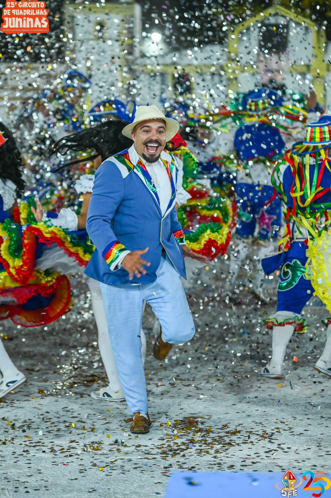

Circuito Oficial
Circuito de Quadrilhas Juninas do DF e Entorno
Calendário, acervo, regulamento e bastidores do Circuito organizado pela LINQ-DFE.
Sobre
O que é o Circuito
Competição oficial da LINQ-DFE com quadrilhas profissionais, avaliadas em coreografia, figurino, casal de noivos, marcador, repertório e harmonia.
O Circuito movimenta a economia criativa, mantém vivo o São João no DF e Entorno e define a quadrilha campeã do Grupo Especial, que representa o DF no Concurso Nacional da CONFEBRAQ.
- Apresentações em arena, com infraestrutura e acessibilidade.
- Julgamento por jurados especializados em quesitos técnicos e artísticos.
- Publicação de notas, classificação e acesso/descenso ao final das etapas.
